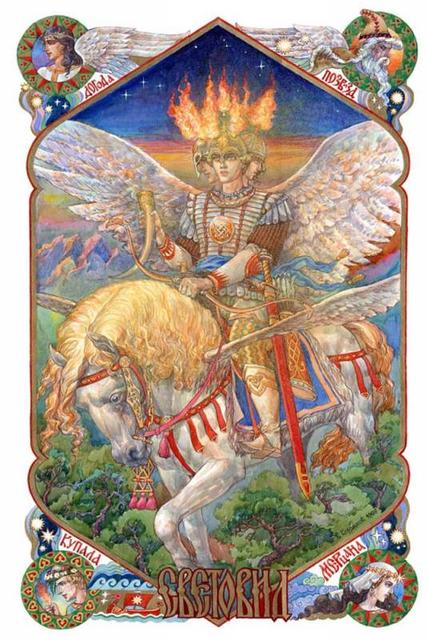

Кап Аркона на Рюгене.
«Мы - Русы, и помним о славных делах наших и песни поём отцов наших. Не забудем никогда то, что мы сыны отцов наших и да имеем любовь к памяти их, и скажем о них, что они были силой нашей, а сила к нам идёт от них, которые молятся он нас».
Велесова Книга
На берегах Балтики ещё в древние времена было единственное место, где Святость и Сила, то есть волхвы и воины, мирно соседствовали. Причём это место было единым культовым центром для всего славянского мира, а также для многих соседних народов, которые имели своих богов, но почитали и славянских небожителей. Это Аркона – город-храм и оплот Русичей (само слово «арка» обозначает место, где Земля соединяется с Небом; то же слово слышится и в названии Аркаима – города Йимы-Ямы-Велеса) с храмом бога Световита (Свентовит, Святовит) на острове Руяне (ныне Рюген, в сказках его ещё именовали остров Буян). Ни одна другая славянская святыня не была в свое время так известна, как та, что была в Ругии ( Руян). Благодаря своим светлости и могуществу она бросала на колени европейских монархов и покоряла народы…
Поклониться этому могущественному Богу отправлялись пруссы, ляхи, моравы, чехи, сербы, поляне, древляне, северы, ильменские славяне и другие многочисленные народы, жившие в Восточной Европе. Хождения к Световиту можно сравнить разве что с современными паломничествами христиан разных церквей в «Святую Землю» - Палестину и мусульман – в Мекку.
Аркона ещё в ХIII веке представляла собой культовый град, в котором были построены большие гостиницы для паломников.
Здесь было средоточие всей сияющей веры, всего упования славянства. И не только славянства — датский король Свейн и многие другие жертвовал добычу в храм Арконы, а в самих храмах, куммирах и ритуалах ученые видят много общего с религией кельтов. Седая же древность спит на берегах Рюгена — она помнит друидов, уничтоженных Цезарем! Еще в XI веке на поклон к его главной святыне, четырехглавому куммира Световита, шли пилигримы из далекой, уже два века вроде бы христианской Чехии. Арконский храм стал главным центром веры славянского Поморья. У храма были обширные отчины, дававшие ему доход, в пользу его собирались пошлины с купцов, торговавших в Арконе, с промышленников, ловивших сельдей у острова Руян. Ему приносилась третья часть военной добычи, все драгоценности, золото, серебро и жемчуг, добытые на войне. Поэтому в храме стояли сундуки, наполненные драгоценностями.
Более 350 лет Аркона была центром сопротивления славян против агрессии иудохристианской Германии-Дании-Польши. Именно благодаря ей был полностью разбит 4 крестовый поход, самый крупный в истории средневековья, (три армии общей численностью 200 000) поход против славян (ПРИЧЕМ ЭТО БЫЛ НЕ ЕДИНСТВЕННЫЙ!). Есть множество описаний, как был разбит 4 крестовый поход.
Важно отметить, что этот святой град стоял как раз на границе между германским Западом и славяно-русско-финно-угорским Востоком, между скандинавским Севером и славянским миром, тянувшимся отсюда далеко на юг – от Балтики до Чёрного моря, называемого в те времена Русским, до Балканского полуострова – словом, до Средиземноморья. Таким образом, Аркона была твердыней духа, божественной защитой для всех этих мест.
Описание Острова Руяна датского историка Саксона Грамматика (1140-1208) когда он оказался на Арконе:
«Город Аркона, построен на вершине высокого мыса. С востока, юга и севера он защищён естественной, а не искусственной защитой – скалами, которые поднимаются вверх, так что их вершин не может достичь даже стрелы, пущенная из арбалета. У скал – море. С запада город защищён валом. Низ этого вала земляной, а верх сделан из двойного деревянного частокола, а промежуток между частоколами засыпан землёй. С южной стороны протекает мощный поток, к которому ведёт укреплённая дорога. На площади посреди города стоит мастерски сооружённый деревянный храм. Его почитают не только за красоту, но и за величие Бога, которому здесь установлен куммир. Частокол, который окружает строение, оснащён искусно вырезанными и умело раскрашенными фигурами. Ограда имеет один только вход, который ведёт к храму. Сам же храм окружён двойной оградой: внешней – из толстых стен, покрытых чёрной крышей, и внутренней – из четырёх колонн, с висящими на них прекрасными опущенными до самой земли коврами. Они заменяют стены… В храме стоял огромный куммир, а возле него были конская сбруя, седло, меч и другое снаряжение». Деревянная скульптура Световита, соответствующего русскому деду Богов – Богу Роду, имела четыре коротко стриженых голов с бородами. Так символически выражалась идея божественного единства – «всё в одном» или «один во всех».
Младшие Боги продолжением своих бессмертных предков, их проявлением в этом и других мирах. Хотя было и другое объяснение многоглавости Световита: он, храня покой подданных, смотрел беспрерывно на все стороны света. В правой руке великий Бог, держал рог с вином, который использовался в ежегодных обрядах. Этот рог был богато украшен оправой из драгоценных металлов. Левая рука Световита характерным жестом упиралась в бок. Его верхняя одежда была довольно короткой, доходила до колен, а ноги, сделанные из разных пород дерева, находились на одном уровне с землёй. В небольшом отдалении видны были узда, и седло куммира с другими принадлежностями. Более всего поражал меч огромной величины, ножны, чёрен которого, помимо красивых резных форм отличались серебряной отделкой. Он будто спустился из небесного Мира Прави и остался на земле Арконы.
Святость Арконы признавалась многими народами, не только русскими и славянами, но и их соседями. Например, датский король Свенон пожертвовал Световиту редкой красоты золотую чашу.
Величественный куммир Бога был установлен на фоне багряного занавеса, украшенного рогами оленей, лосей и туров. Как упомянул Саксон, рядом со статуей находились украшенный тиснением седло и уздечка, а также меч с серебряной гравированной рукояткой.
В Храме служили несколько жрецов в традиционной белой одежде. Старший среди них по положению и по возрасту, носил длинную седую бороду и заплетённые в косу волосы. Обязательной его принадлежностью был высокий посох со священными надписями русской руникой. Подчас этот посох, которому предписывались волшебные свойства, мог выступать заменителем верховного волхва.
В храме Световита сохранялись священные знамёна, отличительные знаки боевых дружин, а также символы отрядов народного ополчения. Главный стяг, самый большой и красивый, имел собственное имя – Станица. Во время походов его несли впереди войска. Этот стяг по своему статусу был равен Богам и был весомее княжей власти.
Особую славу имел белый конь Световита. Его держали в отдельной конюшне при Арконском храме, а ухаживал за ним специально обученный для этой цели жрец. Кроме него никто не имел права приближаться к коню, а уж тем более возлагать на него седло или выводить для прогулки во двор. Считалось, что часто Световит по ночам на своем коне разъезжает окрест и сражается с видимыми и невидимыми, известными и незнаемыми врагами. Подтверждению тому были случаи, когда с вечера вычищенного и выгулянного коня поутру видели грязным, покрытым пеной и утомлённым.

Кроме того, Арконский Храм охранялся «гвардией Световита» - из трёхсот отборных воинов. Все гвардейцы были одеты в красное. В их задачу входила не только охрана храма. Как и Световит, они совершали рейды против врагов. Иной раз хватало молниеносных ударов по скрытой угрозе, чтобы предотвратить войну. Боевые трофеи, взятые во время рейда, поступали в храм, где и хранились.
Особые почести Световиту воздавались после жатвы и сбора урожая. В храм со всех сторон, из разных краёв, от многих народов приходили паломники с дарами.
Пожертвования Световиту доли от собранного урожая были весьма желательными. Размер и ценность само подарка не имели значения: давали, кто сколько мог. Если бедняк приносил монетку, он мог надеяться, что ему воздастся сторицей. Если ратник жертвовал треть боевой добычи, он мог быть уверенным, что воинское счастье не отвернётся от него и впредь. А вот с дарами Земли всё было не так однозначно. Нужно было не только «угостить» Световита на славу, но и узнать о видах на будущий урожай. С этой целью проводились массовые обряды гадания, к которым готовились тщательно и загодя.
День начинался с того, что жрец тщательно очищал храм Световита, чтобы даже на крыше не оставалось ни единой пылинки. Сложность заключалась в том, что волхв во время уборки в храме не должен был осквернять своим дыханием святого места. Проще говоря, надо было набрать полную грудь воздуха и работать до тех пор, пока хватало сил сдерживать дыхание. Выйти из храма, выдохнуть. И вновь, глубоко вдохнув, продолжить работу…
После уборки начиналось совместное Правьславление Богов волхвами во дворе храма, и использовались благовония – для очищения двора храма от незримых злых духов.
Существовали виды обрядов, которые начинались с общей молитвы-гимна правьславления Световита. Люди обращались к Вышним Богам с просьбой о благоденствии для своих семей и всего рода, счастье своему народу, процветании Родины, воинам – побед на суше и на море. Затем молодые волхвы выносили накануне испечённый огромный, в рост человека, каравай-медовик. Верховный жрец становился позади пирога и громко спрашивал у всех собравшихся: «Видите ли вы меня, люди добрые?» Как правило, в ответ звучало многоголосье «нет!». Тогда жрец, выходя из-за каравая, провозглашал: «Пусть же следующий год будет таким же урожайным, чтобы вы не смогли увидеть меня за пирогом!».
После этого на обширной площади установленной длинными столами и лавками, начиналось совместное застолье.
За последующими священнодействиями наблюдали все паломники, ведь этот день был единственным в году, когда завеса храма приоткрывалась, и каждый мог увидеть образ Световита.
Волхв приподнимал пурпурную завесу, подходил к божественной статуе и брал из его правой руки рог. Если он оказывался пустым, то есть налитое в рог вино за прошедший год высохло (волхв должен был перевернуть рог, чтобы все собравшиеся убедились в этом), то грядущий год не следовало ожидать богатого урожая, а значит запасаться продуктами, дабы избежать голода в следующем году. Если в роге оставалась хоть одна капля вина, то это было хорошим предзнаменованием. Остатки вина выливалось жрецом у ног статуи, опустевший рог до краёв наполнял вином из свежего урожая, затем возвращался рог в правую руку божеству. И лишь спустя год позволено было узнать, высохло ли это вино.
Кроме обычных, был и особый ритуал прорицания, в котором использовался конь Световита. Его применяли только в особых случаях, для принятия жизненно важных решениях. Например, перед боевым походом.
Перед храмом втыкали три ряда попарно связанных коротких копий. Через эти препятствия проводили белоснежного коня. Если он начинал переступать с правой ноги, то задуманное дело должно было осуществиться удачно. Если с левой, то дело следовало отложить, а лучше и вовсе от него отказаться. С тех пор и осталось пословица «Встал с левой ноги».
Кроме Арконы, на острове Руяне, в городе Коренице (то есть коренной, главный, основной) стоял и другой храм, поставленный в честь бога воинов Руевита, или иначе Ругевита. Название острова и имя бога имеют один корень с названием местного населения – руяне, или руги, хорошо известные западным историкам с древнейших времён. Самый известный римский историк Публий Корнелий Тацит, как и все его соотечественники, более знакомый с германцами, всё же имел некоторые представления о народах, живущих далее к востоку. В книге: «Германия» в 98 году он писал: «Далее, у самого Океана, живут руги… Отличительная особенность всех этих племён – круглые щиты, короткие мечи и покорность королям».
«Океан» - это Балтийское море, «короли» - это князья ругов-руян. Об этом народе писали и византийцы, хотя народы далёких стран их не очень интересовали: хватало проблем с постоянными нашествиями кочевников.
Здесь же вспомним запись, сделанную довольно поздно, XVI веке, фламандским картографам Герардом Меркатором (1512-1594): «На острове том жили идолопоклонники, именуемые рены (раны), или рутены, также прозванными лютыми за жестокость в бою.. Язык у них словенский, или виндальский (венетский)».
Итак, на острове Рюген жили русские из племени лютичей, которые говорили на русском и славянском языках.
Хочется добавить, что человек привык к огромности Русской Земли и потому без внимания относится к её малым территориям, которые будто бы и не её вовсе: нынешняя Калининградская область – это уже «русская заграница», а дальше и вовсе всё чужое – Польша, Германия… Последняя не оставляет попыток вернуть «свою Восточную Пруссию», дабы присоединилась её к «цивилизованному» западному миру.
Сразу же надо сказать, что все земли Северной Европы, от нынешнего Мекленбурга до Новгорода, представляли единое целое. Тогда не было государств в современном понимании слова, а были земли, на которых жил тот или иной народ, что отнюдь не мешало существовать там же и другим дружественным племенам. Возможно, имеет смысл говорить о племенных объединениях. Именно так надо понимать слова Нестора-летописца о многонациональном посольстве к Руси: «Сказали Руси чудь, словене, кривичи и весь: «Земля наша обильна, а порядка в ней нет...» Надо сказать, что понятие «порядок» в IХ веке сильно отличался от современного. Речь не об установленном людьми законе, - попытки создания князьями законодательства были позже, а о соблюдении норм жизни, установленных богами для арийских народов. То есть на Земле, в Яви, должна была стать отражением жизни небесной, как в Прави. Это и было «право», а его частное проявление – ряда, то есть строй, устройство взаимоотношений. Иными словами, всё должно было быть по порядку, то есть по совести. В далёкие времена, когда на Руси возобладали хазарские нравы: централизация власти, право сильного и лихоимство «дьяков, то есть новоявленных волхвов» или предтеч современных чиновников, - люди стали уходить на поиски Беловодья – легендарной страны, где божественные порядки всё ещё сохранились.
Но вернёмся на остров Руян, именно здесь и хранились те порядки по совести и чести. Здесь ещё хранили ведические знания Божественного Беловодья. Здесь славили Световита и Руевита. В честь бога Световита нарекались многие русские князья.
По данным исторических современных источников: - Руевит – не имя, а всего лишь обозначение национальной принадлежности – бог ругиев, или руенов. Первое, что отличало его от большинства богов, - это подчёркнуто красный цвет. Его храм, напоминавший огромный был красного цвета. Внутри стояло изображение сурового семиликого бога. Почему семиликого? Во-первых, «семь», как и «три», - священное, заветное число. Во-вторых, Руевит символизировал множество в единстве – он как бы целым войском в одном лице. Поэтому его семиликость была увенчана огромным единым шлемом. В-третьих, он был постоянно на страже, глядел на все стороны света, чтобы заметить приближающуюся издалека опасность. В-четвёртых, у Руевита за поясом было заткнуто семь остро отточенных мечей. Восьмой он держал перед собой в вытянутой руке. Существовало поверье, что если найдётся такой силач, который сможет вырвать из руки бога меч, то всему руянскому племени придёт конец. Забегая вперёд, поясняется в этих источниках, что совершить это деяние так никто и не смог: датчане, которые вероломно напали на остров, просто отсекли руку статуи с зажатым в ней оружием. Затем образ Руевита утопили в море.
Рядом с храмом Руевита стояли ещё два святилища местных богов – Поревита и Поренута. Первый отвечал за соблюдение мирных договоров, второй покровительствовал морским странникам. Поренут также был многоглавым – четыре лика символизировали четыре ветра или стороны света: северный, восточный, южный и западный, столь важные для мореходов. Пятое лицо находилось на груди великана: его глаза смотрели вниз, в морские пучины, куда, к сожалению, уходили многие моряки.
Руяне, как и их боги, одевались во всё красное. Молодые мужчины носили свободные рубахи до колен. Старики предпочитали одеяния длинные до земли. Все одеяния обязательно подпоясывались. Этот клан воинов, как правило, пренебрегал обувью, несмотря на прохладный климат. Босоноги были и боги. И причёски у жителей Прави и Яви были одинаковыми – стриглись просто, в круг. Носили усы и бороды. В современном германском историческом музее города Мекленбурга хранится руянский барельеф, на котором запечатлены бравые мореходы древности.
В море они выходили под отличительным знаком – красными парусами. Руяне были истинными хозяевами Балтийского моря, не знающими соперников ни в сражении, ни в мирной торговле. Ну а столь акцентированный красный цвет известен с незапамятных времён как обозначение Русов.
Но по нашим исследованиям ведических сохранённых знаний можно дополнить и сказать по этому моменту следующее:
Современный Рюген (древний Руян или остров Буян) – это последнее место в европейской части, где так долго продержались русские ведические знания. Место Силы и Сияющей Веры, где славили русского Бога Рода!
В подтверждении этого вышеизложенное описание датским историком Саксоном, что в храме Святовита стоял куммир «соответствующего русскому деду Богов – Богу Роду, имела четыре коротко стриженых голов с бородами. Так символически выражалась идея божественного единства – «всё в одном» или «один во всех». Можно к этому добавить, что «Един и множествен одновременно», а четыре головы – этот знак Бога Рода, что символизирует главный знак всей нашей Вселенной.
Этот родовой знак и был на щите Вещего Олега, который он закрепил на вратах града Константинополя, в честь своей победы.
Если проследить родословную Вещего Олега, то убедимся в его прямой наследственности Рюрика, который и был родом с Рюгена.
Далее если проследить в подтверждение того, что на Рюгене славили именно Бога Рода и его заповеди мы рассмотрим следующее:
РУГЕВИТ (Руевит) – верховный славянский бог. Бог Руевит - Бог-Воин, защищающий вместе со своими помощниками, Поревитом, Яровитом и Поренутом, Земли созвездия Макоши (Большой Медведицы), Древней Прародины многих Славянских Родов, ибо наши Великие Предки первыми нашли и заселили Мидгардъ-Землю.
Куммир Ругевита стоял на острове Ругене, сделан он был из огромного дуба, а шатровый храм представляли стены из красных ковров или красных тканей. Богов, которых считали своими Предками, Покровителями и воинственными защитниками, изображали с ярко выраженными мужскими атрибутами.
Если рассматривать с позиции символов и цвета, то смело можно заявить, что бог Ругевит - это как одна из ипостасей Бога Рода, то есть по шатровому куполу храма, и по описанию Саксона: «истукан-куммир, представлял собой чудовище с семью ликами, которые все были на шее и соединялись наверху в одном «черепе», то есть символически и образно и это представляет собой символ Рода - фалосную систему, что и означает его почитание. А по красному цвету это сразу также понятно, что это цвет Бога Рода, потому что у человека – второй энергетический центр «Зарод», отвечающий за рождение и имеет цвет также – красный.
Род - Вышний Бог, податель всех благ; ибо весь внутренний Космос Вселенной является Его проявлением, потому что Он един и множествен одновременно. К нему обращаются, когда необходима Духовная и Душевная поддержка Светлых Богов и Предков, ибо Боги наши суть Отцы наши, а мы дети их.
Если разобрать по русской рунике (см. главу Ведическая наука образности. Азбука Русов) – Ругевит, то образ сразу становится понятен: Р - Род, У - Движение, Г -Глас, Е – Есмь триединство, В – веди, познание, И – союз земной, Т - тех (мир Предков). Соединив всё, получим такой образный смысл: Родовое Движение Триединства Ведического познания Союза Земного с миром Предков.
Далее возникает вопрос: почему в описаниях всего восемь топоров, да только в одной руке? Ведь наши Предки Русы, владели одинаково мечами в обеих руках, как правой, так левой. И логично будет сделать вывод, что исторически, возможно, стёрта информация о девятом мече, который и был во второй руке. Ведь «девять» – это также священное славянское число, которое символизирует полное развитие. Также славянский крест, который почитали и на Рюгене, ведь это есть энергетический символ девяти чакр, две которые находятся на плечевых суставах рук и отвечают за Родовые каналы – Мужской (Лада) и Женский (Леля).
Далее, что такое - Кап? Это Капище! Капище – это священное место для проведения славянских обрядов богопочитания и сбора Копы - органа управления Родовой общины. Обычно располагалось в самом благоприятном месте: на холме со свещенной рощей и свещенными родниками.
Согласно летописям и историческим очеркам – храмовая гвардия, это и есть казаки-характерники. Ведь казаки – это и есть войско Бога Рода, которому Он дал свой Каз (отсюда: указ, приказ, наказ) - охранять Его небесные и земные пути. Отсюда идёт «казак», причём это слово читается, что слева направо, что справа налево - одинаково. Так же у казаков до сих пор сохранились на их штанах красные лампасы, чем они очень гордятся и дорожат. Это не просто вшитые красные полосы, а это значит принадлежность к войску бога Рода. И ещё, так как главный стяг, самый большой и красивый, имел собственное имя - Станица, можно смело заявить, что на сегодня это название сохранило именно в образе главного поселения казаков в губернии или районе.
Значит, на острове Буяне или Руяне, ныне Рюгене, а именно на Кап Арконе и было возведено Капище Рода нашими Предками, когда осваивали земли, омываемые Варяжским морем в очень далёкие времена. И хранили-то всю родную ведическую мудрость Предков, чистоту Совести, Правды и Чести, какие привнесли Русичи с собою из Беловодья – Ирия – Рая. А по Ведам следует, что Ирийские горы, расположены на юге современной Западной Сибири. Именно на Алтае и располагалось Капище Рода, высечение внутри скалы, где Жрецами Рода проводились Огненные обряды Вышним Древним Светлым Богам. Значит, Аркона – это частица Беловодья, можно сказать его «родной брат».
И побывав в лето 7521 на священном Кап Арконе, приехав с Алтая, мы почувствовали крепкий Дух Предков и их любовь и внимание к нам, все чудодейственные энергии родного дома, всю наполненную ими Природу, ветер, запахи и даже такую же растительность, которая растёт только в местах Беловодья…
Сегодня остров Рюген, Кап Аркона – это одно из мест на Земле Ведической Родовой Силы Русов, которое хранит вечную память о Наших Предках и их мудрых заветах. Это место, где существует портал Совести и Чести Мира Прави и открывается он любому потомку Рода Небесного, у которого на генном уровне живёт память о его Родных Богах и Предках. Это место, где возможно соединить триединство Духа, Души и Тела!

Слава Роду и Предкам нашим!
УРА!
Материал подготовили:
Паньков Олег Геннадьевич, историк – исследователь
«Ведической Культуры Семьи и Рода в Наследии Предков»;
Панькова Елена Геннадьевна
директор Культурно-Просветительского Общественного Фонда
Алтайского края «Наследие Родовых Истоков».
Использованная литература:
- Калашников В.И. Атлас тайн и загадок. Русь легендарная. – М.: Белый город, 2007г.-240с. с илл.
- Славяно-Арийские Веды. «Слово Волхва Велимудра». Часть вторая, Часть третья - Омск; Издание Древнерусской Инглиистической церкви Православных Староверов-Инглингов; Издательство «АРКОР», 2000.-256 стр.
- Картина русского художника К. Васильева «Свентовит».
- Картина русского художника В. Иванова «Храм Свентовита. Весна» и «День морской богини».
- Художественные изображения из ресурсов Интернета.